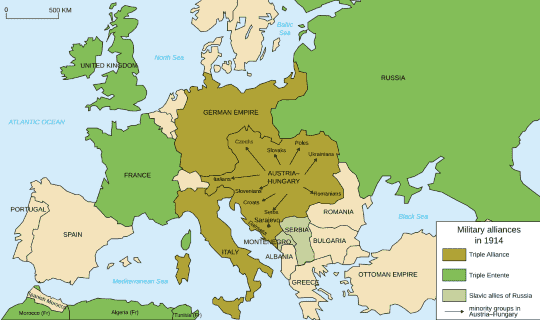
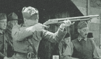
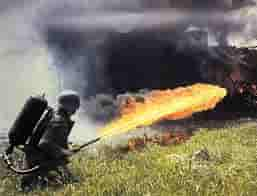

World War One was the first ever world war that took place, also known as the Great war,
partially
due to
the large number of lives lost in this war, approximately
a total of 17 million died as a result of this war, about 7 million of which are civilian deaths.
Who took part in the War?
There were 2 sides, the Allied powers, which mainly consists of France, The United Kingdom,
Russia,
Italy, and the United states. And there is also the
Central powers, which mainly consisted of the German empire, Austria-Hungary and the Ottoman
Empire.

Image from Wikipedia
How did World War One start?
The Great War began on June 28, 1914, with the assassinations of Austrian Archduke Franz Ferdinand and
his
wife,
Sophie, while they were visiting Sarajevo,
Bosnia, a country recently annexed into the Austrian Empire. Many Bosnians and their Serbian neighbors
resented
this foreign rule and the Archduke's visit to Sarajevo provided
the opportunity for a small band of Serbian dissidents to strike back.
Franz Ferdinand, the Archduke who got assassinatied.
Austria responded to the assassinations by teaming up with its ally, Germany, and declaring war on
Serbia.
The
conflict soon involved Russia, France and Belgium. Fearful of a full-scale world war
that would threaten its sea routes to other countries, Great Britain joined the fight against Germany
and
Austria.
Map of Europe before WW1
How did World War One end?
Germany surrendered in 1918, with the leaders of the German army telling the German government to end the
fighting, the government asked the US for an armistice, which
is an agreement to end the fighting. So at the 11th hour on the 11th day of the 11th month of 1918, the
Great
War officially ended.
Noteworthy things from WW1
The Battle of Verdun
The battle of verdun is one of the longest, bloodiest, and most-ferocious battles of world war 1.
Casualties from the french are around 400,000, and the German ones are around 350,000. The french held
the line against the germain for
10 months, before the French finally obtained victory.
New enemies comes new battle doctrines
Many tactics were developed during this time, be it to combat other tactics developed by the other side, or
to catch enemies by surprise.
This page will show you some of the tactics that were used by both sides during the Great War.
Blockades
This was a time where Troops transported goods via the ocean, so when german caught wind of this, they
attacked those supply lines.
Britian's Royal navy reacted this by planning a blockade against Gaermany, and while they cannot use close
blockades due to technological advancemence
(i.e, mines), they opped to focus on distant blockades.
This British's ships primarily patrolled
The entrance to the North Sea between Scorland and Norway
The English Channel in the Dover Straits
Trench Warfare
Trench warfare is a type of land warfare, where troops utilize dug in lines and positions to safely traverse
to certain areas, while avoiding stray bullet fire.
In the image above, we can see the trench having many zigzags, this is to reduce the chances of artillary
doing signifcant damage to not only the structure
of the trench, but also the things that are inside the trenches (The troops and weapons)
Trenches became a favoured tactic with both sides, but it is usually associated with the Germans, due to
each side having a high reliance on Artillery.
Trenches were a necassity as it gave troops a way to protect themselves from the shockwaves of artillery
fire.
German soldiers inside their trenches
Unfortunately for those that rely on these trenches, Many weapons were developed during this time in an
attempt to "Sweep" These trenches clean of their enemies.

A soldier aiming a Trench Sweeper
Artillery barrage
Artillery was most commonly used on the Western front, raining down high-explosive shells, shrapnel and
poison gas on the enemy. This artilley would not only
be very lethal, but it would also make the enemy's moral drop.
A tactic used was called Creeping barrage, where a line of infantry would be moving behind a line of
artillery fire. This line would usually move about 50 to
100 yards every few minutes moving forward slowly. If done correctly, this is a very devastating stratergy,
as it would force enemies back to their trenches while
the infantry behind the artilley fire can catch the enemies by surprise.
Unfortunately, this tactic is usually very difficult to pull off, as the artillery from the back has to be
in Perfect unison with
the infantry in the front. Most of the time, it ends up with either the artillery moving to slowly, causing
the artillery fire to land on their
own troops, or the infantry moves too fast, resulting in them getting caught in their own infantry.
Technology too advance for Mankind's own good
During this time, many advancements in technology were made and utilized. This page will show you some
of these pieces of technology used during
the war
Weapons
Lebel Model 1886 rifle
The Lebel Model was primarily used by the French military during WW1. It is an 8mm
bolt-action infantry
rifle that entered service in 1887. This rifle is the first rifle to utilize smokeless powder ammuunition.
Winchester Model 1897
The Winchester Model 1897, better known as the Trench
Sweeper, was feared by germans for its sheer brutallity. Chambered
in 12 gauge (Most of the time), this shotgun has the unique property to be slam fired, where the user can
just pull the trigger and continuesly rack the gun,
unloading the gun in seconds.
This gun was so feared by the germans, yet so efficient, that many germans
protested the use of this gun, claiming that it "Violated the laws of war".
Flammenwerfer M16
Despire protesting against the American's usage of the Trench Sweeper, the Germans
use this cruel machine called the flammerwerfer,
which is a flamethrower. This flamethrower is often used to clear trenches, and quite painfully, as burning
to death is often the most painful way to go out.

Vechicles
British Mark 1 tank (Little Willie)
The Mark 1 tank, better known as Little Willie was the first ever tank that was
invented and utilized in World war 1.
Its ability to bring troops into the frontline somewhat safely was revolutionary during this time of war.
Unfortunately, Little Willie
was slow, and it has difficulty moving over trenches.
But this prototype was the catalyse to making Big willie, a tank that fixed the
previous problems of being unable to move over trenches, and now
sports some self defence weapons to deal with infantry.
Fun fact: Tanks have genders
Artillery
Artillery is very devastating to line infantry, being able to shoot enemies
Indirectly from miles away, many armies utilize
artillery, be it the french and their 75mm field gun, the British's 18 pounder, or the
German's Big bertha (as shown in the image), it would almost be stupid not
to use artillery during this time. The heavy usage of artillery was also why trench warfare was so popular.
Zeppilin
Utilized by the Germans, the Zeppilin is a force to be reckoned with as it is able to drop bombs from
the sky, raining hellfire upon the troops that are on
the ground. Unfortunately all it took was one bullet to burst the air container for the Zeppilin to explode
and come crashing down
Lets see you hit these targets using the weapons that the british used!
(Careful not to shoot any medics, that would be a warcrime!)
Score: Nil
time left
Shooting game
There is always a price to pay
War never changes in certain aspects, one of which is the innocent lives that are lost in war. Here are
some statisticsApproximately 40 million casualties were made during world war 1, this number
includes both military and civilian casualties. And an estimate
15-22 million deaths were caused during this war.
The countries that has lost the most soldiers are both Russia and France, with Russia loosing around
4.9 million troops, and france loosing 4.2 million
troops.
The losses does not just extent to the lives lost. The amound of money that was spent and lost during
world war 1 is an estimated $125-186 Billion
in direct costs, and another $151 billion in indirect costs
How about a quiz to see what you have learnt so far :D
Question goes here
Scan This QR code to see this website on your handphone!